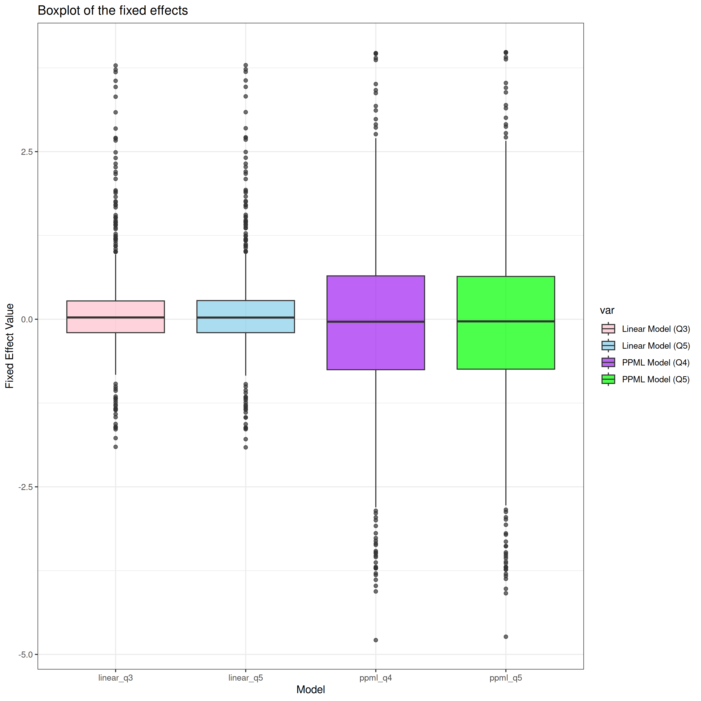

Coding assignment (QSM class)
This is a coding assignment for the QSM class.
1 Use of programming language
For questions 1-7, I used R programming language. I also used R for most of the data cleaning and manipulation. For other questions that requires more computationally intensive analyses (modeling, etc.), I used julia programming language.
2 Main data information
I am using the 2022 LODES data from LEHD for my analysis. I obtained the raw data for Philadelphia county from the LEHD website and aggregated the data into tract-tract level. The process of cleaning the raw data was conducted using the source code: src/R/01_clean_raw_data.R.
My primary analysis zone will be bilateral commuting flow within Philadelphia county for the year 2022. This means I will not be considering the flow where either the origin or the destination is outside of Philadelphia county.
Q1
As I mentioned in Section 2, I obtained bilateral commuting flow data from LEHD LODES for the year 2022. I also downloaded supporting data on the locations of the tracts or blocks underlying the data. I downloaded them in the input folder. You can also use make raw command to automatically download the raw data.1
Q2
For distance, I will use the distance between the centroids of the origin and destination tracts. For this, I used sf package and tigris package in R to calculate the distance between the centroids of the origin and destination tracts. The source code is available in src/R/02_calculate_distance.R. I also retained the fixed effects estimates in the Appendix.
Q3
I estimated the following linear model:
\[ \log(N_{ij}) = \theta_{i} + \lambda_{j} - \epsilon \kappa d_{ij} + e_{ij}\label{eq:distance} \]
The estimation results are reported in the following table:
: This table presents estimation result of the equation \(\ref{eq:distance}\). distance_km is the estimate of the \(-\epsilon\kappa\). The value in the paranthesis is standard error.
Q4
After including all the \(ij\) pairs and adding in zero commuting flows, I estimated the PPML model as follows:
\[ \log(\mathbb{E}[N_{ij}])= \theta_{i} + \lambda_{j} - \epsilon \kappa d_{ij} + e_{ij}\label{eq:ppml} \]
The estimation results are reported in the following table (I also retained the fixed effects estimates in the input/q4_ppml_fes.csv):
: This table presents estimation result of the equation \(\ref{eq:ppml}\). distance_km is the estimate of the \(-\epsilon\kappa\). The value in the paranthesis is standard error.
We can clearly see that the estimate of the \(-\epsilon\kappa\) differs from the estimate in the previous question. The absolute size of the estimate is larger in the PPML model. Intuitively, I think this occurs because the PPML model incorporates the zero commuting flows that were neglected in the linear model. Since the zero commuting flows were not fully incorporated in the linear model, the estimate in the linear model was underestimating the effect of the travel-time cost on the commuting flow. The estimate in the PPML model shifts downward to account for the zero commuting flows.
Something to note is that in PPML, FEs are not always identified. In our case, two FEs are not identified because there is no flow for any tract-tract pair. For this assignment, I will be not using the two FEs that drop due to 0 outcomes. However, past literature suggests that there are alternative ways to deal with this issue.
Q5
- For \(ii\) pairs, we could add minimum distance from the centroid to the edge of the polygon geometry as the distance measure. While this is not a perfect measure, it still should work as a proxy for measuring the relative size of certain distance from traveling within the same tract. This also solves the zero distance issue. The only problem might be that this method could be bit ad-hoc and not consistent as we are just adding additional values only onto the \(ii\) pairs and not consider the \(ij\) pairs.
Using this method, I get the following estimates for linear and PPML models:
- Another way would be to change the definition of the distance measure so that \(ii\) pairs will not have zero values. We leverage the fact that our data can become more granular. That is, we have information on the longitude and latitude of the centroid of the census block. After calculating the distance between two centroids of the census blocks, we can use mean of the all the block-level distances within the same tract-tract pair as the distance measure of the tract-tract pairs. This will give us non-zero distance for \(ii\) pairs.
Using this method, I get the following estimates for linear and PPML models:
You can see that the estimates are very similar to the estimates in the previous question. This suggests that perhaps the zero distance issue is not a major issue in the analysis.
Q6
I plotted the boxplot of the fixed effects estimates for the linear and PPML models. The results are reported in the following figure:

: This is the boxplot of the fixed effects estimates for the linear and PPML models. The values are normalized (z-score). The color represents the model. linear_q3 and ppml_q4 are the fixed effects estimates for the linear and PPML models in Q3 and Q4. linear_q5 and ppml_q5 are the fixed effects estimates for the linear and PPML models in Q5.
It seems the distribution of the fixed effects estimates are too different from each other. Especially, the distribution is almost identical within the same model (linear and PPML). The only difference is that the PPML model seems to have slightly larger variations.
Q7
My code in src/R/07_create_market_access.R creates the market access variable. For each residential and workplace tract, I calculate the market access variable using the definition in the question. I posted the result in the Appendix. In the main document, I will plot the map of the market access variable.


: This is the map (Philadelphia county) of the market access variable. The color represents the market access variable. The lighter the color, the higher the market access. The values are normalized (z-score).
Q8
I use two scripts to accomplish this. For data manipulation stage I use src/R/08_fixed_point_algorithm.R to create the sum of bilateral commuting flow and the expotential terms. For implementing fixed point algorithm, I use src/julia/08_fixed_point_algorithm.jl.
I plot the map of the market access again below:
: This is the map (Philadelphia county) of the market access variable. The color represents the market access variable. The lighter the color, the higher the market access. The values are normalized (z-score).
Q9
While the level of the market access variable differs, the overall distribution of the market access variable is similar. That is, the ordinality of the market access variable is preserved for both cases. This result is consistent with the derivation of the market access equation we learned in class. To be specific, we discussed in page 21 of the week1-lecture 1 that the equations in Q8 and Q9 are equivalent way to derive market access variable. While the level of the market access variable could differ, the ordinality of the market access variable should be similar.
Q10
Following Apppendix F of Brinkman and Lin (2024), I need to create a fixed point algorithm to solve for the following equation2. (We will assume that there are total \(J\) workplace tracts and \(I\) residential tracts. While the number of tracts is same, we just use separate indices for them to make it more clear in the equation.):
\[\begin{align*} \omega_j = \left( \frac{1}{N_{Wj}} \left[\sum_i \left( N_{Ri} \cdot d_{ij}^{-\epsilon}\right) \left[\sum_{j'} \left( w_{j'}^\epsilon \cdot d_{ij'}^{-\epsilon} \right)\right]^{-1}\right] \right)^{-\frac{1}{\epsilon}} \end{align*}\]
I use the following matrix multiplication to setup the fixed point algorithm (\(\omega = T(\omega)\)):
\[\begin{align*} \underbrace{ \begin{bmatrix} \omega_1 \\ \omega_2 \\ \vdots \\ \omega_J \end{bmatrix}}_{J \times 1} = & \overbrace{ \begin{bmatrix} \left(\frac{1}{N_{W1}} \cdot N_{R1} \cdot d_{11}^{-\epsilon}\right) & \left(\frac{1}{N_{W1}} \cdot N_{R2} \cdot d_{21}^{-\epsilon}\right) & \ldots & \left(\frac{1}{N_{W1}} \cdot N_{RJ} \cdot d_{J1}^{-\epsilon}\right) \\ \left(\frac{1}{N_{W2}} \cdot N_{R1} \cdot d_{12}^{-\epsilon}\right) & \left(\frac{1}{N_{W2}} \cdot N_{R2} \cdot d_{22}^{-\epsilon}\right) & \ldots \\ \vdots & \vdots & \ddots \\ \left(\frac{1}{N_{WJ}} \cdot N_{R1} \cdot d_{1J}^{-\epsilon}\right) & \left(\frac{1}{N_{WJ}} \cdot N_{R2} \cdot d_{2J}^{-\epsilon}\right) & \ldots & \left(\frac{1}{N_{WJ}} \cdot N_{RJ} \cdot d_{JJ}^{-\epsilon}\right) \\ \end{bmatrix}}^{J \times I} \times \\ &\underbrace{ \begin{bmatrix} d_{11}^{-\epsilon} & d_{12}^{-\epsilon} & \ldots & d_{1J}^{-\epsilon} \\ d_{21}^{-\epsilon} & d_{22}^{-\epsilon} & \ldots & d_{2J}^{-\epsilon} \\ \vdots & \vdots & \ddots \\ d_{I1}^{-\epsilon} & d_{I2}^{-\epsilon} & \ldots & d_{IJ}^{-\epsilon} \\ \end{bmatrix}}_{I \times J} \times \underbrace{ \left(\begin{bmatrix} \omega_1 \\ \omega_2 \\ \vdots \\ \omega_J \end{bmatrix}\right)^{\epsilon}}_{J \times 1} \end{align*}\]
For convenience, I did not put the power of the \(-\frac{1}{\epsilon}\) in the equation above. Also note that I also did not inverse the rows of the matrix after the multiplication of \(I \times J\) and \(J \times 1\). I will add them in the fixed point algorithm.
After retrieving the wages for each location, the rest is pretty straightforward. This is because we no longer have the iterative equations. We can just solve for the land rents, neighborhood amenities and productivities using the equations in the Appendix F of Brinkman and Lin (2024). I have implemented this procedure in src/R/10_recover_fundamentals.R and saved amenity and productivity data in output/tables/amenity.csv and output/tables/productivity.csv.
I plot the map of the land rents in the following figure (Note that I z-scored land rents and then used asinh transformation to make the map more readable. This is because the land rents are very skewed for certain tracts so raw values for other tracts become indistinguishable in the map):
: This is the map (Philadelphia county) of the land rents. The color represents the land rents. The lighter the color, the higher the land rents. The values are normalized (z-score) and then transformed using asinh transformation to make the map more readable. The grey areas are tracts which we cannot recover the land rents as there is no flow for them.
It is hard to say whether the land rents are reasonable or not but my thoughts are that the results are not doing a good job of accurately recovering the actual land rents. While the results seem to correctly hint that regions near the center of the city have higher land rents, this is also not very accurate as tracts that are more close to the center of the city have lower land rents. According to some anecdotal evidence, the land rents of the center of the city should be the highest and the southern part of Philadelphia also should have relatively higher land rents. These anecdotal evidence do not seem to be well captured by the results.
One of the reasons why the results are not very accurate could be because of the simplifying assumptions we made. For example, we assumed that the land area is the same for all tracts. This is of course not the accurate depiction of the actual land areas of the tracts in Philadelphia county. I am also using tract-tract centroid distance as the measure for the travel time cost. This might not be accurate as perhaps there are certain factors that significantly affect the travel time that the actual travel time differs from the centroid distance. Thus, these simplifying assumptions might be leading to a more less accurate results.
Another possible reason is that maybe the inversion process is not doing a very good job of recovering the actual land rents. In Brinkman and Lin (2024), they use Chicago metropolitan area as their data for the inversion process. It might be that the model is not well-suited for Philadelphia county. For example, the paper mentions that Chicago provides a good setting given that it exhibits relatively centralized employment and has relatively homogeneous topography. While this also seems to be true for Philadelphia county, perhaps there are some differences that make the model not well-suited for Philadelphia county.
References
Appendix
A. Residential market access
B.Workplace market access
Footnotes
Note that if you want to re-download the raw data, you must first use
make clean_rawcommand to remove the raw data in theinputfolder. Also note that if the original data was updated during the course of the semester, there is a likelihood that the new downloaded data might have different data structure that could affect the analysis.↩︎I tweaked the equation from the paper to make it more clear for the matrix muliplication process I will be using below.↩︎